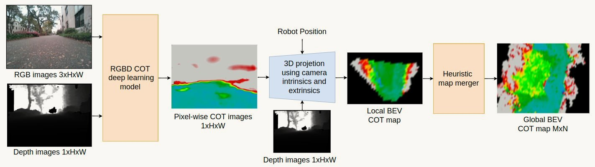

Research / Featured research
Vision-Based Navigation and Manipulation
Perception that informs physical decisions. A robot with several ways to move should choose its route by what it will cost, not only by whether it is passable. We learn from camera images alone, and without human labels, how much energy the terrain ahead will demand, and plan with it.
Self-supervised cost of transport estimation for multimodal path planning
Which way costs the least energy? From camera images alone, the multimodal M4 robot learns to predict the cost of transport of the terrain ahead, labelling its own training data as it drives and running the whole pipeline onboard a Jetson Orin Nano.


More research Ground-Aerial Morphing Robotics · Learning-Based Control · Fluid-Body Interaction and Flow Control